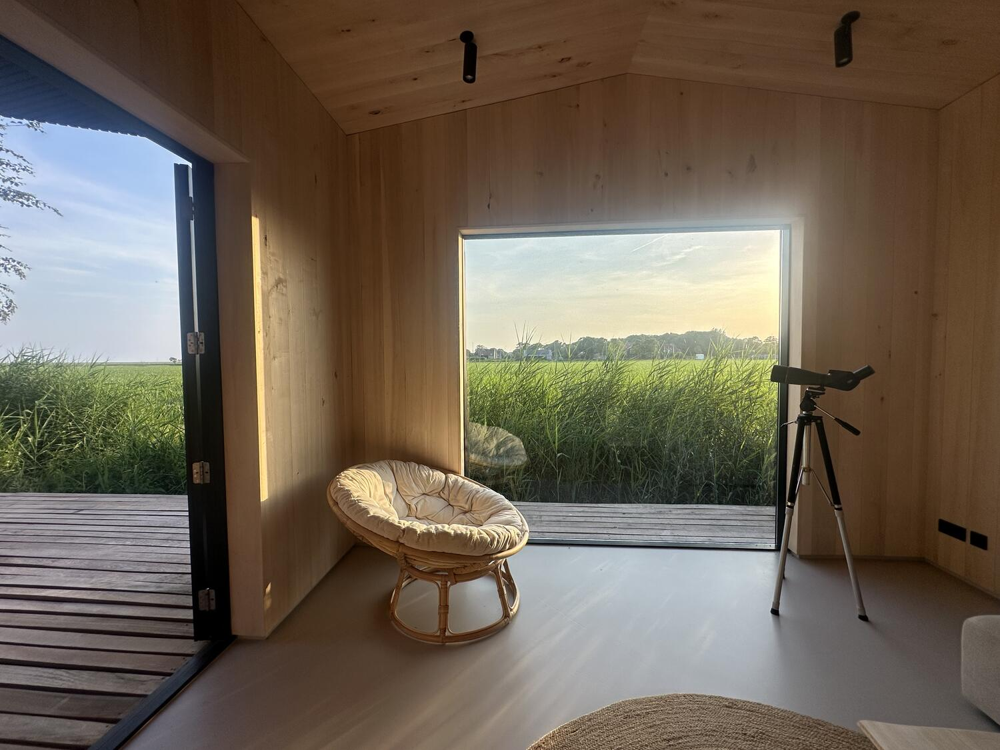
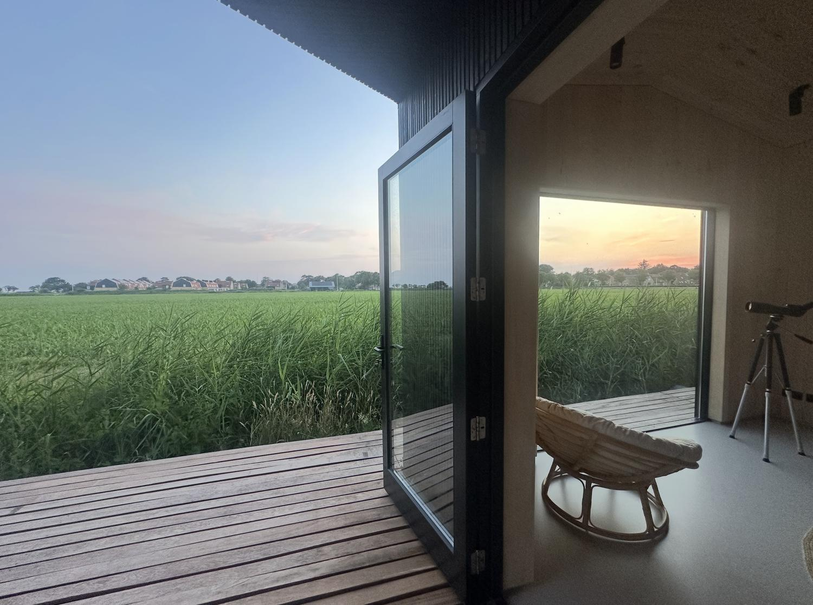
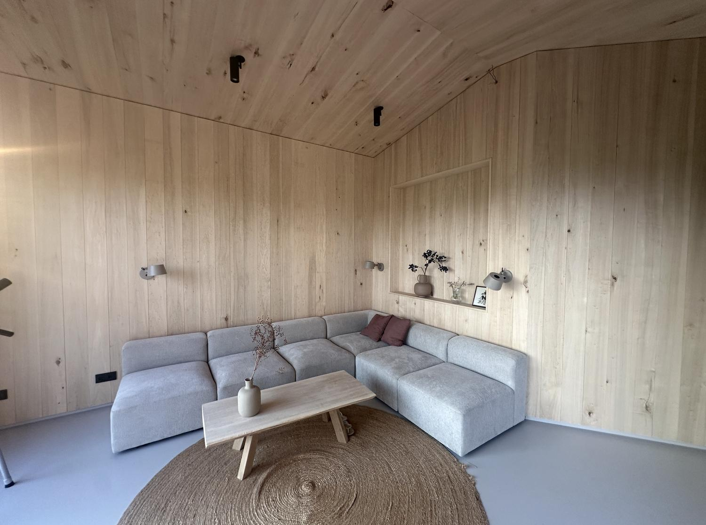
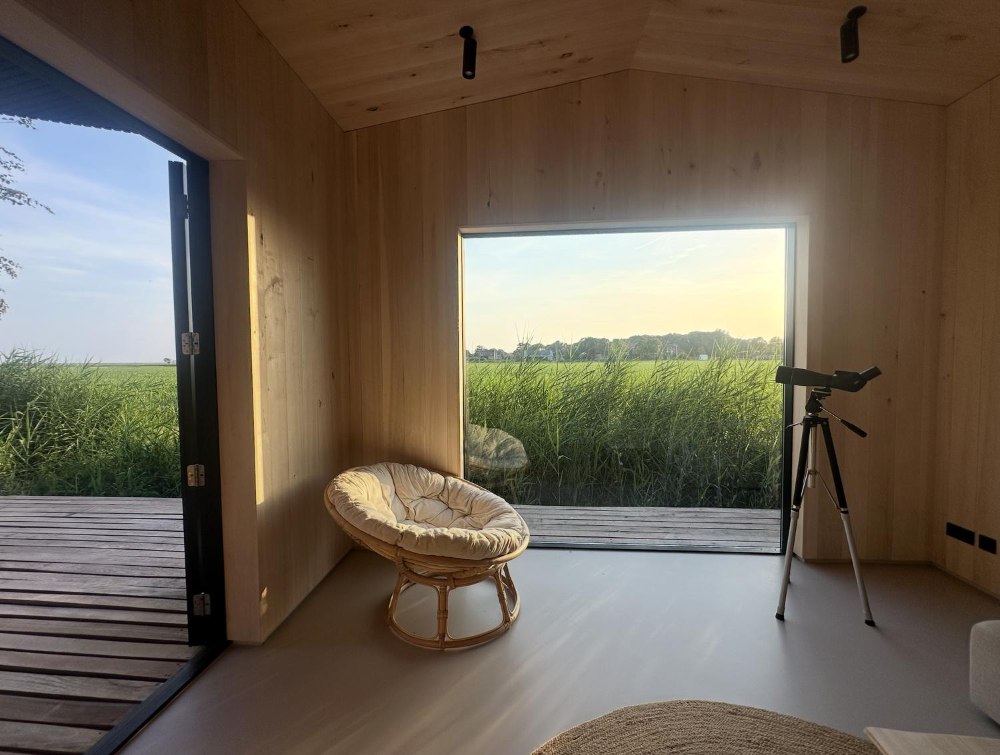
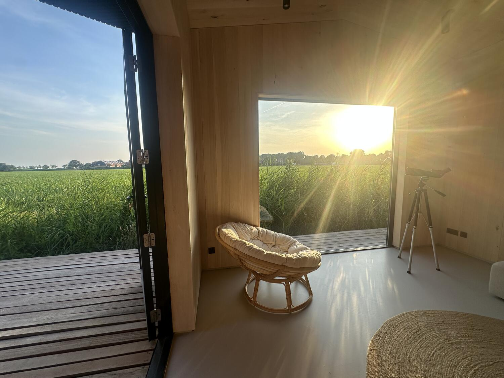
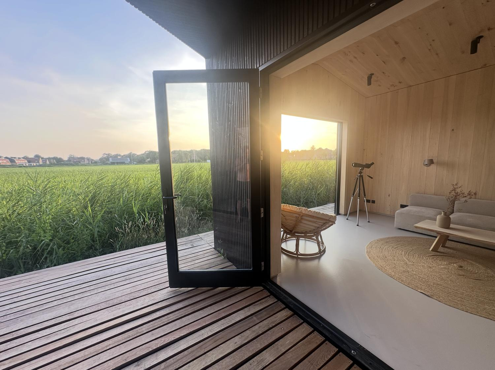
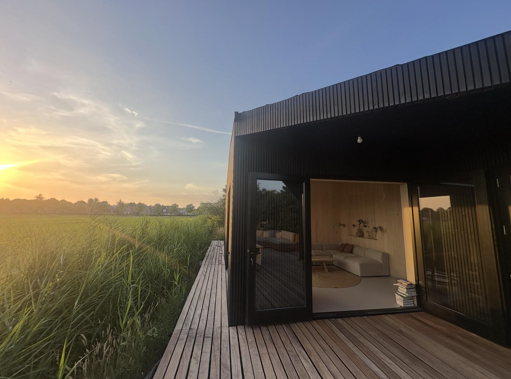
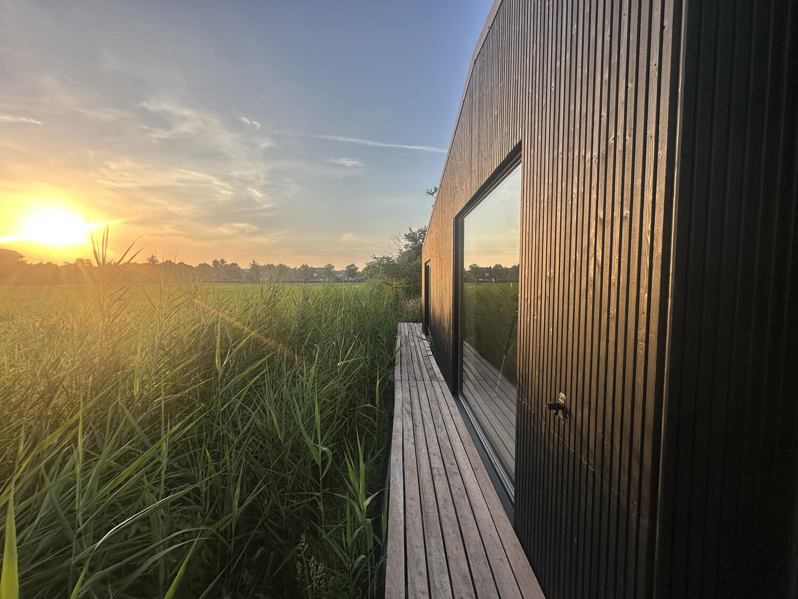

Aanwaaien · Design-vakantievilla · Schiermonnikoog
Aan de rand van het dorp, waar de horizon eindeloos is en de eilandrust meteen voelbaar wordt, ligt Aanwaaien — een van de weinige moderne designhuizen op het eiland.
Boek een verblijf →Het idee
Deze in 2026 geheel nieuw gebouwde design-villa biedt een hoogwaardig en comfortabel thuis voor maximaal zes tot acht personen. Het interieur ademt rust en warmte dankzij het consequent doorgevoerde gebruik van prachtig, licht populierenhout.
Dit natuurlijke materiaal vormt een harmonieus samenspel met de grote raampartijen, die het unieke eilandlicht en de seizoenen naar binnen halen. In de master bedroom word je wakker met een weids, onbelemmerd uitzicht over het landschap — een levend schilderij dat elk moment van de dag verandert.
Royale slaapkamers met uitzicht, plus een knusse kamer voor kinderen of extra gasten.
Geheel nieuw gebouwd, met architectonische aandacht en hoogwaardige materialen.
Licht populierenhout, consequent doorgevoerd van vloer tot nok.
Sfeervol ingericht terras als verlenging van de leefruimte, van ontbijt tot late avond.
Het huis

Ontspanning
Trek je terug voor een warm bad, of geniet na op het sfeervol ingerichte loungeterras. Bij mooi weer is dit de perfecte verlenging van de leefruimte — voor een langzaam ontbijt of een zachte avond buiten.

Wonen
De strakke, compleet uitgeruste keuken nodigt uit tot uitgebreid koken. Aan de royale, houten familietafel komt alles samen: goed eten, lange gesprekken en plannen voor de volgende dag.

Kijken
Grote raampartijen halen het unieke eilandlicht en de seizoenen naar binnen. Vanuit de royale slaapkamers kijk je weids en onbelemmerd over het landschap — een uitzicht dat elk moment van de dag verandert.
Beelden



Het eiland
Het kleinste bewoonde Waddeneiland is in zijn geheel Nationaal Park. Vanaf deze rustige locatie aan de rand van het dorp ligt alles op fietsafstand.

Aanwaaien is met veel liefde, architectonische aandacht en hoogwaardige materialen ingericht. De eigenaren delen deze bijzondere plek graag met gasten die de esthetiek en de zorg van dit designhuis weten te waarderen — zodat het een plek blijft om telkens weer naar terug te keren.
Beschikbaarheid bekijken →Reserveringen via aanwaaien-schier.nl · reactie binnen 24 uur